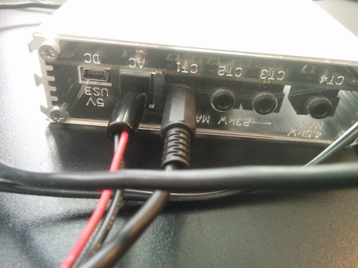

Hello,
I am trying to use a YHDC SCT-013-030 current transformer to read the current from a refrigerator in my house, and send this data to my Raspberry Pi running the image found here https://openenergymonitor.org/emon/node/12212.
My problem is that the only data that is shown in Emoncms from Node 10 is very weird. I only get values on power1 and vrms, nothing else. It also does not seem to make a difference if I move the CT clamp from the cord of the refrigerator, it still shows the same values on both power1 and vrms.
power1 seems to shift between 5-8 and vrms is around 235-248.
I have the clamp attached to the refrigerator power cable as specified in https://openenergymonitor.org/emon/buildingblocks/ct-and-ac-power-adapto....
I am currently powering the emonTx with AC power.
As I have little background in electronics, the task of debugging this seems daunting. What am I doing wrong?
Best regards,
Anton
Re: Problems getting data from YHDC SCT-013-030 current transformer with EmonTx
Your description isn't clear about how or where you have installed your CT, but have you looked down the FAQs? - because I think your problem might be listed there. In particular: "Why doesn't my CT work?"
Second, the SCT-013-030 is not suitable for use with the emonPi. To make the Pi suitable for use with that CT, you must remove the burden resistor inside the Pi and re-calibrate the sketch.
Re: Problems getting data from YHDC SCT-013-030 current transformer with EmonTx
I have read the FAQ, and I recognize the problem but none of the solutions. I assume the wire to the fridge should be single-current and I have followed the steps on how to place the clamp. It however still does not work.
This is my basic setup:

I am also not using the ready-to-go emonPi, but rather a Raspberry using the RFM12Pi chip to talk to the emonTx which in turn is connected to the CT. Is this still going to be a problem?
Best regards,
Anton
Edit - duplicate post deleted - Moderator, BT
Re: Problems getting data from YHDC SCT-013-030 current transformer with EmonTx
I'm afraid that tells me nothing about how you have installed your CT. Which picture best fits the cable you've put the CT on? If it's the flexible cord between the refrigerator and the plug that goes into the socket on the wall, it's like the right-hand picture and no CT will work for the reasons given on that page. You will need to make up a short extension lead that will give you safe access to one of the current-carrying conductors.
The same note about the CT being unsuitable applies to your emonTx too. It's the emonTx that you need to modify by removing the burden resistor, and then recalibrate.
Re: Problems getting data from YHDC SCT-013-030 current transformer with EmonTx
I tried linking an imgur gallery but apparently only one image got posted.
http://imgur.com/a/ex6Vz
Re: Problems getting data from YHDC SCT-013-030 current transformer with EmonTx
I tried linking an imgur album but apparently only one image got posted...
http://imgur dot com/a/ex6Vz
Re: Problems getting data from YHDC SCT-013-030 current transformer with EmonTx
@bergmam,
Isn't that the multi-core cable to the fridge? If so the sampled current passes both ways through the C.T. - giving a net flux to detect of zero. The information you need to do this correctly is in the reference that Robert gave.